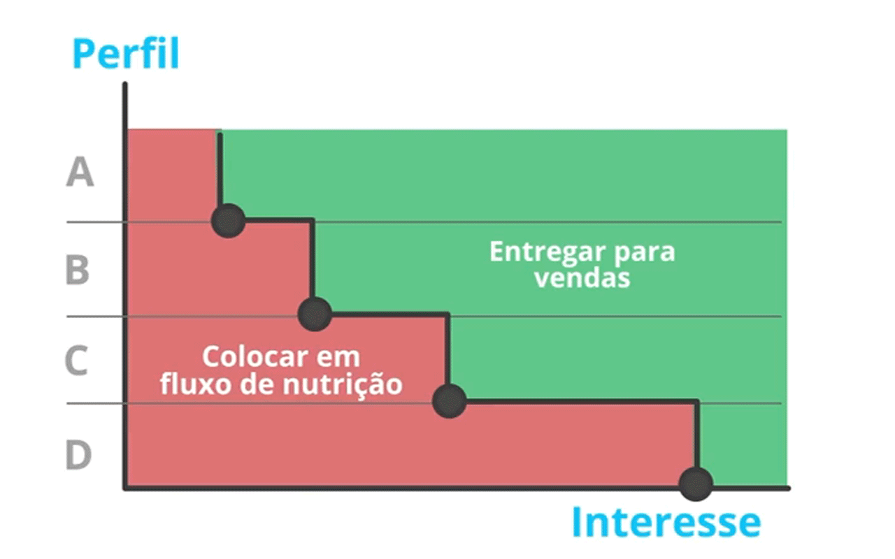

Com o avanço no número de pessoas conectadas e na troca de informação entre elas, o marketing precisou avançar e conquistar espaço também no meio digital para atingir essas pessoas
O marketing digital basicamente é o anúncio feito através da internet, em sites, blogs, redes sociais, etc. Através do inbound marketing é possível sistematizar um processo para atrair mais oportunidades de negócio, através de 5 fases de um funil para que se obtenha resultados maiores:
Criar mais acesso ao site atraindo novos clientes
Converter esss clientes em potenciais de negocio
Criar uma base de relacionamento para incentivar e facilitar as chances de venda
Abordagem comercial para transformar isso em negócio analisando a melhor estratégia
Analisar cada etapa e o que foi feito, melhorar o que precisar
Com um marketing bem estruturado e um processo de funil, a empresa tem uma taxa de conversão e de vendas muito maior, convertendo pessoas em leads, e posteriormente concluindo o processo de venda.
Que tipo de conteúdo (ensinar, vender, anunciar, comprar..) vai ser relevante a ponto das pessoas compartilharem?
Criação de um "personagem fictício" baseado no tipo de cliente que você quer ter, o tipo de pessoas que você quer alcanççar. Persona é diferente de público-alvo.
Canal de transmissão para compartilhar as publicações que transmitam as ideias, um canal de comunicação para conversar com o público. deve ser constante.
Pensar em como tornar esse blog mais conhecido, por exemplo através das redes sociais.
Fazer postagens com frequência ecxessiva pode prejudicar, e afastar pessoas da sua página. Deve ser frequente, mas com postagens que entretenham as pessoas, e desperte curiosidade e desejo de conhecer mais sobre o conteúdo. Se atentar novamente à persona durante a criação das postagens vai ajudar a criar o conteúdo a ser postado.
Nas redes que sua persona esteja presente. Depois de uma análise, verificar que tipo de páginas sua persona segue, que conteúdo ela consome, e outras características que vão ajudar a aproximação.
Otimização do site ou conteúdo para os mecanismos de busca. Um SEO feito de forma correta tem chances muito maiores de ser encontrado pelos clientes através dos sites de busca. Os 3 pilares de avaliação do SEO no google:
Principais meios de tráfego pago:
Aparece nas primeiras posições de pesquisa do usuário
Geralmente banners em sites como anúncios
É possível fazer anúncio por segmentação (idade, sexo, localização, etc)
Teste as ferramentas, compare as diferenças
Fazer com que usuários criem uma conexão de interesse, seja preenchendo um formulário, deixando meios de contato, etc.
É uma página única de conversão, para criar uma ação. geralmente contém:
É a primeira coisa que o usuário vai ver, deve chamar a atenção para maximizar a chance de venda. O usuário deve ser capaz de identificar em 5 segundos o conteúdo da página e o valor pelo menos
Dar corpo ao conteúdo, destacar tópicos principais, explicar funcionalidades e vantagens
Área onde o usuário deve preencher com seus dados, deve ser perguntado apenas item que você for efetivamente usar. Por exemplo, se você não usa telefone para a empresa, não é conveniente pedir. quanto menos campos para ser preenchido, mais chance do usuário preencher
Algo que chame a atenção, resultando na ação do cliente, um e-book após criar cadastro por exemplo, alguma oferta
Um dos motivos mais comuns da falta de motivação para comprar algo é a falta de conhecimento do produto, por exemplo: Alguem que use uma câmera fotográfica mas que não tenha conhecimento sobre a área, dificilmente vai sentir necessidade de comprar outra. Em contrapartida, alguém que estude nessa área e conheça os equipamentos, vai ter um desejo de compra muito maior. Se você consegue explicar seu produto, e ser visto como referência por seus clientes, as chances de venda são muito maiores
Válido momentaneamente, mais específico. Funciona melhor se já tem conhecimento do interesse dos clientes
pode ser com ofertas educativas, com algum item (ebook, desconto, brindes...) serve para direcionar o alvo
compilado de conteúdo, pode conter artigos como principais ofertas, melhores produtos, recentes, etc. pode ajudar quando não se sabe o interesse dos clientes
reunir contatos por características em comum
Envio de e-mails automáticos bom base nas ações do usuário. Exemplo: O usuário baixa um e-book sobre anúncios no Facebook
->Em 3 dias é enviado um email com informações para otimizar os resultados
->Em 5 dias são enviadas ofertas sobre esse nicho
Esses emails podem variar de acordo com o comportamento, como as páginas que ele acessa, os conteúdos que pesquisa, os lugares onde clicou.
Descobrir quem tem maior potencial de compra e abordar estas pessoas, através de um sistema de pontuação, usando duas variáves: PERFIL e INTERESSE
Os perfis indo de A a D, sendo A com mais chance de venda, e D com menos chance. Exemplo: para um curso de marketing, um estudante seria perfil D, com menos chance de compra. Já um gerente de marketing de uma empresa, seria um perfil A, com maior chance
A linha de interesse mostra o nível de interesse do usuário, o quanto ele interagiu com os coneteúdos por exemplo
os que estiverem na área verde, devem ter atenção pois tem grandes chances de venda
Qualificar para abordar os leads certos
Combinar o time de marketing com o time de vendas, por exemplo, o time de marketing tem que entregar 1000 leads para o time de vendas ao longo do mês. Ppode ser enriquecido com detalhes, como características, regiao, completar formulário, para ser um lead válido
Exemplo de combinação do Marketing com as Vendas
| Marketing | Vendas |
|---|---|
1000 leads/mês 250 leads/semana |
Entrar em contato com os leads recebidos Não forçar venda para leads não interessados Fazer 3 tentativas de contato |
Atingimento de objetivos
Analisar se os objetivos alcançados eram os esperados
No marketing digital voce tem informações precisas de onde estão vindo seus clientes, com isso fica mais fácil focar no que realmente precisa. Algumas métricas importantes são:
É o custo que você tem com a aquisição de clientes, pegue o valor investido em marketing, e divida pela quantidade de clientes
Se calcula dividindo o quanto você obteve de vendas pelo investimento total
Análise de canais
Analisar a performance de cada canal de marketing, qual o retorno deles (social media, SEO, ADS, etc), quantos visitantes, quantos leads, quantas conversões
Fazer um relatório diário
Relatório onde você vê rapidamento como está a empresa na internet, se alguem marcou sua pagina, se foi mencionado em algum lugar
Fazer um relatório semanal
Para entender com mais clareza se vai alcançar a meta mensal, e o que pode ser melhorado
Fazer um relatório mensal
Onde realmente vai fazer uma comparação com outros meses, ver o que está funcionando ou não, mudar o que precisa
Algumas ferramentas que ajudam com essas tarefas